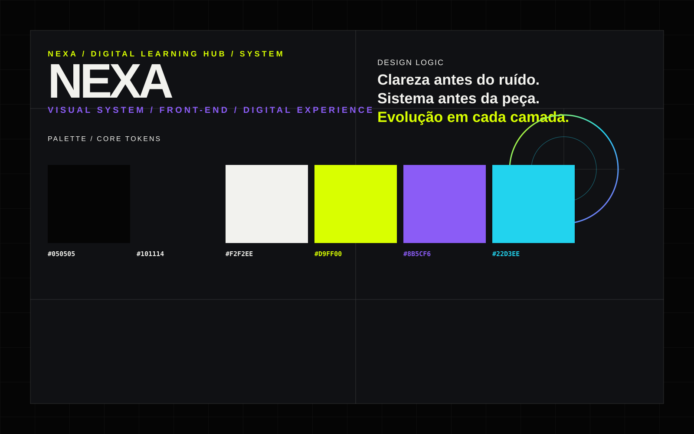

Clareza
Hierarquia, ritmo e contraste para reduzir ruído visual e facilitar a navegação.
O projeto conecta arquitetura web estática, comunicação visual e organização de conteúdo para demonstrar uma presença digital educacional clara, funcional e consistente.
Hierarquia, ritmo e contraste para reduzir ruído visual e facilitar a navegação.
Componentes e regras visuais reutilizáveis para manter consistência entre páginas.
Uma base simples preparada para novos conteúdos, interações e experiências digitais.
A identidade visual foi traduzida para o produto digital em vez de tratada apenas como decoração.

O mesmo sistema orienta identidade, layout, componentes e microinterações.
Grandes áreas tipográficas, espaçamento generoso e linhas estruturais criam uma hierarquia visual reconhecível.
Cards, botões, navegação e formulários seguem os mesmos tokens visuais.
Conteúdos fictícios usados para demonstrar hierarquia de informação, composição e navegação institucional.
Computadores, arquivos, internet, organização digital e boas práticas de segurança.
Comunicação visual, composição, criatividade e produção de materiais digitais.
Documentos, planilhas, apresentações, colaboração e organização do trabalho digital.
Introdução à inteligência artificial, avaliação de resultados e uso responsável da tecnologia.
O Digital Learning Hub funciona como um case de front-end dentro da linguagem visual do NEXA Studio, conectando design, tecnologia e educação.
Explorar o projeto